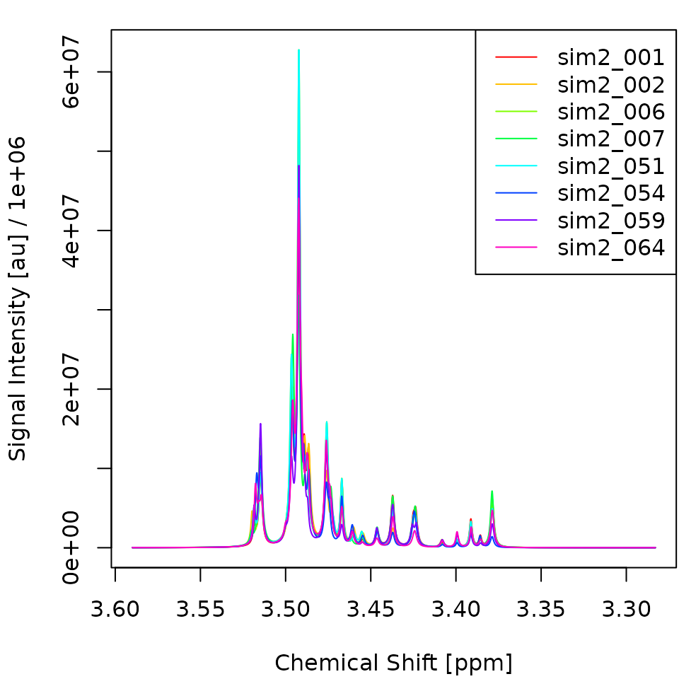
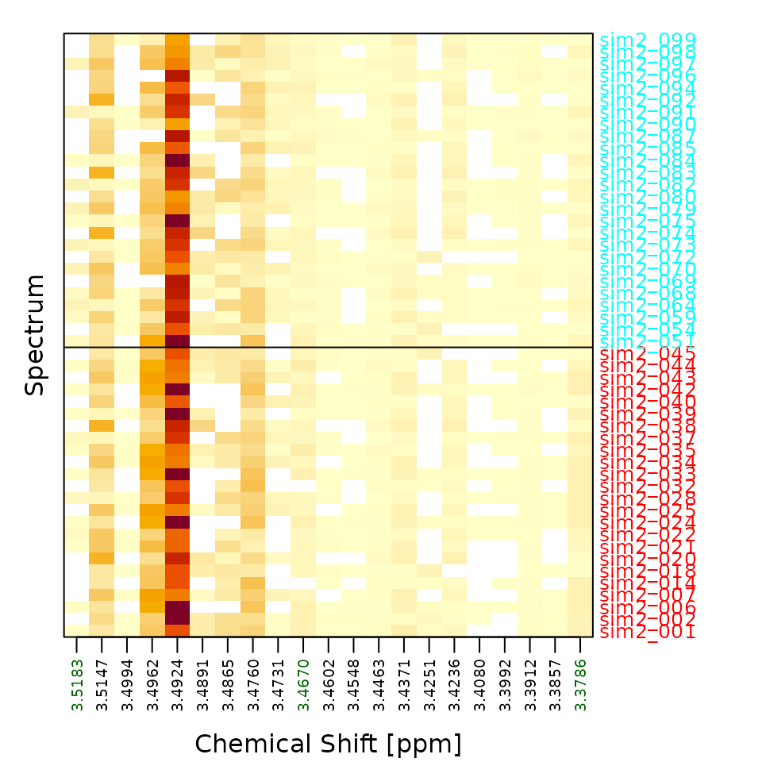
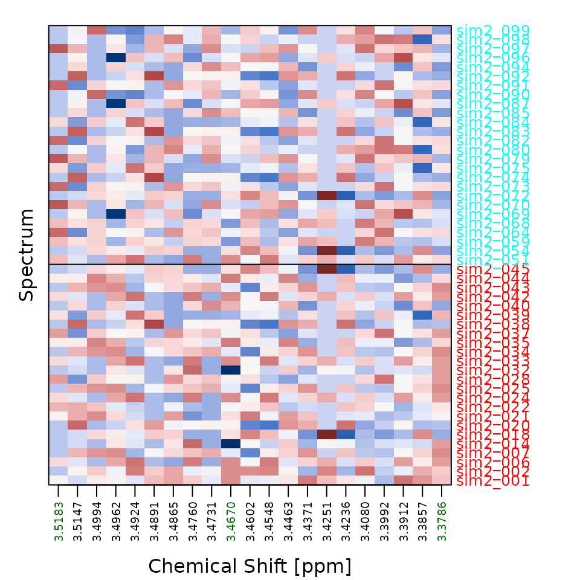

This article shows how to turn raw one-dimensional NMR spectra into a
trained classifier with metabodeconplus, following the same
pipeline described in the paper:
- Deconvolution – represent each spectrum as a list of Lorentzian peaks.
- Alignment (CluPA) – shift peaks so corresponding peaks across spectra share the same chemical-shift index.
- Reference snapping – snap each aligned peak onto the nearest reference-grid column, so all spectra share one common set of feature columns.
- Feature matrix – collapse the snapped peak lists into one row per spectrum.
-
Classification – fit a random forest with
ranger.
fit_mdm() runs all five steps in one call; below we
first do them by hand so each intermediate state is visible, and then
reproduce the result with the one-shot call. We use the bundled
sim2 dataset.
Load spectra
sim2 contains 100 simulated 1D NMR spectra split evenly
into groups A and B. Five of every 25 peaks
per spectrum differ between groups by 10 % in area. The group labels are
attached as an attribute; see ?sim2 for details.
library(metabodeconplus)
x <- sim2
y <- attr(sim2, "group")
n <- length(x)We use one half of the data for training and one half for testing.
The pipeline, step by step
We pick a small group-balanced subset (4 + 4 spectra) just for the
plots; the model itself is trained on all of x[tr].
Step 1: Deconvolute
deconvolute() models each spectrum as a superposition of
Lorentzian peaks.
decons <- deconvolute(x[tr], nfit=10, smit=2, smws=5, delta=10, npmax=0, verbose=FALSE)
plot_spectra(decons[abtr])
heat_spectra(decons[abtr], y=yab)

Step 2: Align (CluPA)
clupa() shifts each spectrum’s peaks toward a reference
spectrum using the hierarchical cluster-based peak alignment (CluPA)
algorithm. It picks the reference automatically and attaches it, so we
can reuse it for the test data.
aligns <- clupa(decons, maxShift=50, verbose=FALSE)
ref <- attr(aligns, "ref")
plot_spectra(aligns[abtr])
Step 3: Snap peaks to the reference
CluPA aligns peaks continuously; snap_to_ref() then
snaps each peak onto the nearest reference-grid column (within
maxCombine datapoints), so every spectrum ends up described
by the same set of feature columns.
snapped <- snap_to_ref(aligns, maxCombine=5)Step 4: Build the feature matrix
peak_mat() rasterises the snapped peak lists into a
matrix with one row per spectrum and one column per populated
reference-grid position. peakPos records which columns are
populated – these are the features the model sees.
## [1] 50 21
heat_spectra(X, y=y[tr], true_x0=true_x0)
heat_spectra(X, y=y[tr], true_x0=true_x0, scale_cols=TRUE)

The standardized view (scale_cols=TRUE) makes the group
structure visible: columns near true_x0 show consistent
sign differences between A (top) and B (bottom).
The one-shot call
fit_mdm() performs all five steps – deconvolute, align,
snap, featurize, fit – and, when any of npmax /
maxShift / maxCombine is a vector, searches
the grid and returns the best model. Choose the backend with
model = "ranger".
md <- fit_mdm(x[tr], y[tr], model="ranger",
npmax=0L, maxShift=50L, maxCombine=5L,
verbosity=0, nworkers=1)
print(md)## metabodeconplus model (mdm)
## model: ranger
## npmax: 0
## maxShift: 50
## maxCombine: 5
## acc: 88.0%
## auc: 92.0%Predict held-out spectra
predict() on an mdm object mirrors the
training pipeline for new data, reusing the stored reference and feature
columns.
# Small rank-based AUC helper (positive class = second factor level).
auc <- function(y, prob) {
pos <- y == levels(y)[2]; r <- rank(prob)
n1 <- sum(pos); n0 <- sum(!pos)
if (n1 == 0 || n0 == 0) NA_real_ else (sum(r[pos]) - n1 * (n1 + 1) / 2) / (n1 * n0)
}
preds <- predict(md, x[te], type="all", verbosity=0)
acc <- mean(preds$class == y[te])
au <- auc(y[te], preds$prob)
cat(sprintf("Test accuracy: %.1f%%\n", 100 * acc))## Test accuracy: 84.0%## Test AUC: 0.825Tune the preprocessing
Passing a vector for npmax, maxShift or
maxCombine makes fit_mdm() evaluate the
cartesian product and keep the best-scoring cell (accuracy, ties broken
by AUC). The augmented grid is returned in md$mog.
mt <- fit_mdm(x[tr], y[tr], model="ranger",
npmax=c(0L, 30L), maxShift=c(20L, 50L), maxCombine=c(2L, 5L),
verbosity=0, nworkers=1)
knitr::kable(head(mt$mog[order(-mt$mog$auc), ], 5), row.names=FALSE,
caption="Top parameter combinations by AUC.")| npmax | maxShift | maxCombine | acc | auc | acc_se | auc_se |
|---|---|---|---|---|---|---|
| 30 | 20 | 5 | 0.88 | 0.9391026 | NA | NA |
| 30 | 50 | 5 | 0.88 | 0.9391026 | NA | NA |
| 30 | 20 | 2 | 0.86 | 0.9358974 | NA | NA |
| 30 | 50 | 2 | 0.86 | 0.9358974 | NA | NA |
| 0 | 20 | 2 | 0.86 | 0.9326923 | NA | NA |
For an honest generalization estimate on small datasets, wrap the
whole search in outer cross-validation with benchmark()
(not run here because it repeats the grid search for every fold):